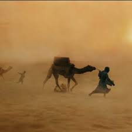

ألا كل ماشية الخيزلى
المتنبي
شاهد الفيديو

أَلا كُلُّ ماشِيَةِ الخَيزَلى
فِدا كُلُّ ماشِيَةِ الهَيذَبى
وَكُلِّ نَجاةٍ بُجاوِيَّةٍ
خَنوفٍ وَما بِيَ حُسنُ المِشى
وَلَكِنَّهُنَّ حِبالُ الحَياةِ
وَكَيدُ العُداةِ وَمَيطُ الأَذى
ضَرَبتُ بِها التيهَ ضَربَ القِمارِ
إِمّا لِهَذا وَإِمّا لِذا
إِذا فَزِعَت قَدَّمَتها الجِيادُ
وَبيضُ السُيوفِ وَسُمرُ القَنا
فَمَرَّت بِنَخلٍ وَفي رَكبِها
عَنِ العالَمينَ وَعَنهُ غِنى
وَأَمسَت تُخَيِّرُنا بِالنِقابِ
وادي المِياهِ وَوادي القُرى
وَقُلنا لَها أَينَ أَرضُ العِراقِ
فَقالَت وَنَحنُ بِتُربانَ ها
وَهَبَّت بِحِسمى هُبوبَ الدَبورِ
مُستَقبِلاتٍ مَهَبَّ الصَبا
رَوامي الكِفافِ وَكِبدِ الوِهادِ
وَجارِ البُوَيرَةِ وادِ الغَضى
وَجابَت بُسَيطَةَ جَوبَ الرِداءِ
بَينَ النَعامِ وَبَينَ المَها
إِلى عُقدَةِ الجَوفِ حَتّى شَفَت
بِماءِ الجُراوِيِّ بَعضَ الصَدى
وَلاحَ لَها صَوَرٌ وَالصَباحَ
وَلاحَ الشَغورُ لَها وَالضُحى
وَمَسّى الجُمَيعِيَّ دِئداؤُها
وَغادى الأَضارِعَ ثُمَّ الدَنا
فَيا لَكَ لَيلاً عَلى أَعكُشٍ
أَحَمَّ البِلادِ خَفِيَّ الصُوى
وَرَدنا الرُهَيمَةَ في جَوزِهِ
وَباقيهِ أَكثَرُ مِمّا مَضى
فَلَمّا أَنَخنا رَكَزنا الرِماحَ
فَوقَ مَكارِمِنا وَالعُلا
وَبِتنا نُقَبِّلُ أَسيافَنا
وَنَمسَحُها مِن دِماءِ العِدا
لِتَعلَمَ مِصرُ وَمَن بِالعِراقِ
وَمَن بِالعَواصِمِ أَنّي الفَتى
وَأَنّي وَفَيتُ وَأَنّي أَبَيتُ
وَأَنّي عَتَوتُ عَلى مَن عَتا
وَما كُلُّ مَن قالَ قَولاً وَفى
وَلا كُلُّ مَن سيمَ خَسفاً أَبى
وَلا بُدَّ لِلقَلبِ مِن آلَةٍ
وَرَأيٍ يُصَدِّعُ صُمَّ الصَفا
وَمَن يَكُ قَلبٌ كَقَلبي لَهُ
يَشُقُّ إِلى العِزِّ قَلبَ التَوى
وَكُلُّ طَريقٍ أَتاهُ الفَتى
عَلى قَدَرِ الرِجلِ فيهِ الخُطا
وَنامَ الخُوَيدِمُ عَن لَيلِنا
وَقَد نامَ قَبلُ عَمىً لا كَرى
وَكانَ عَلى قُربِنا بَينَنا
مَهامِهُ مِن جَهلِهِ وَالعَمى
لَقَد كُنتُ أَحسِبُ قَبلَ الخَصِيِّ
أَنَّ الرُؤوسَ مَقَرُّ النُهى
فَلَمّا نَظَرتُ إِلى عَقلِهِ
رَأَيتُ النُهى كُلَّها في الخُصى
وَماذا بِمِصرَ مِنَ المُضحِكاتِ
وَلَكِنَّهُ ضَحِكٌ كَالبُكا
بِها نَبَطِيٌّ مِنَ اهلِ السَوادِ
يُدَرِّسُ أَنسابَ أَهلِ الفَلا
وَأَسوَدُ مِشفَرُهُ نِصفُهُ
يُقالُ لَهُ أَنتَ بَدرُ الدُجى
وَشِعرٍ مَدَحتُ بِهِ الكَركَدَنَّ
بَينَ القَريضِ وَبَينَ الرُقى
فَما كانَ ذَلِكَ مَدحاً لَهُ
وَلَكِنَّهُ كانَ هَجوَ الوَرى
وَقَد ضَلَّ قَومٌ بِأَصنامِهِم
فَأَمّا بِزِقِّ رِياحٍ فَلا
وَتِلكَ صُموتٌ وَذا ناطِقٌ
إِذا حَرَّكوهُ فَسا أَو هَذى
وَمَن جَهِلَت نَفسُهُ قَدرَهُ
رَأى غَيرُهُ مِنهُ مالا يَرى